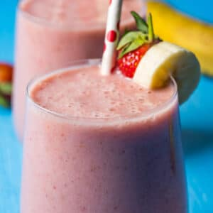

Banana Strawberry Smoothie

Description
Ingredients
- 1 cup Almond Milk (240ml)
- 1 Tablespoon Almond Butter
- 2 Tablespoons Maple Syrup
- 2 Medium Frozen Bananas (200g)
- 2 cups Fresh Strawberries (300g)
Steps
-
Add all the ingredients to the blender jug starting with almond milk, then
almond butter, maple syrup, frozen banana and fresh strawberries.
- Blend until very smooth.
- Pour out into glasses and serve immediately.